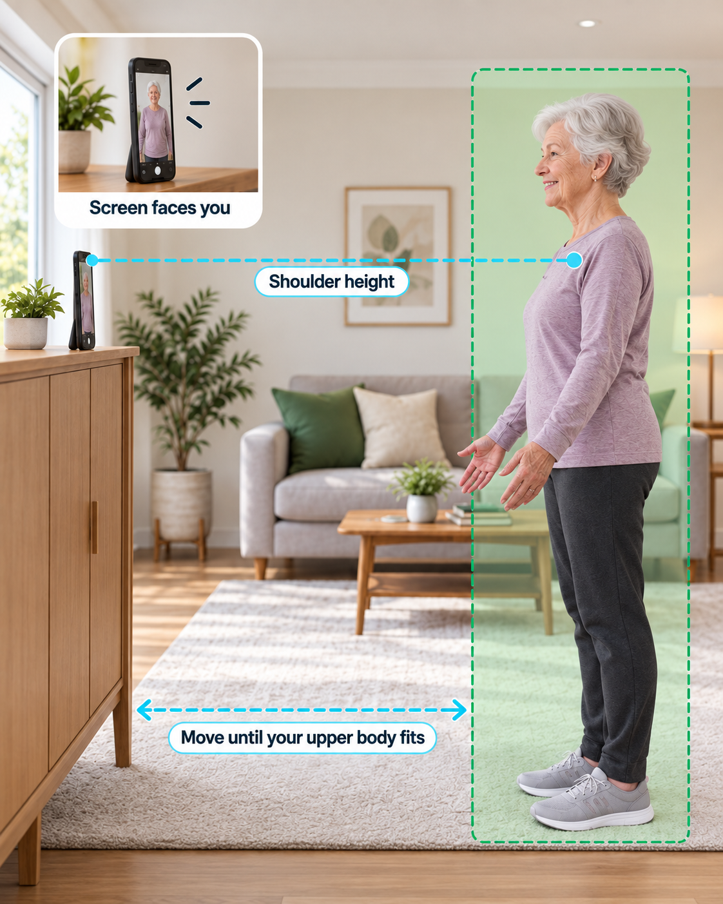

Which camera are you using today?
Choose the device you will use for this session.
Place your iPhone like this
Use a stable surface and leave space to move.

Make sure the camera can see your head, shoulders, arms and hands.
- Stand your iPhone upright in a secure holder. Keep the screen facing you.
- Place the camera at shoulder height for your seated position. Ask someone to help if needed.
- For arm and hand tasks, sit in a stable chair. Match the camera to your seated shoulder height.
Camera test in progress
Keep your head, shoulders, arms and hands in view.
LIVE
Opening camera...
Your camera preview will appear here.
Checking view steadiness
Checking head and shoulders
Checking arms and hands
Rehyn checks these automatically. No boxes to tick.
Keep both arms relaxed and visible.
This setup check stays on your device. It is not recorded.
No camera available?
Your survey answers and saved plan are still available. Camera-guided tasks need a working camera.